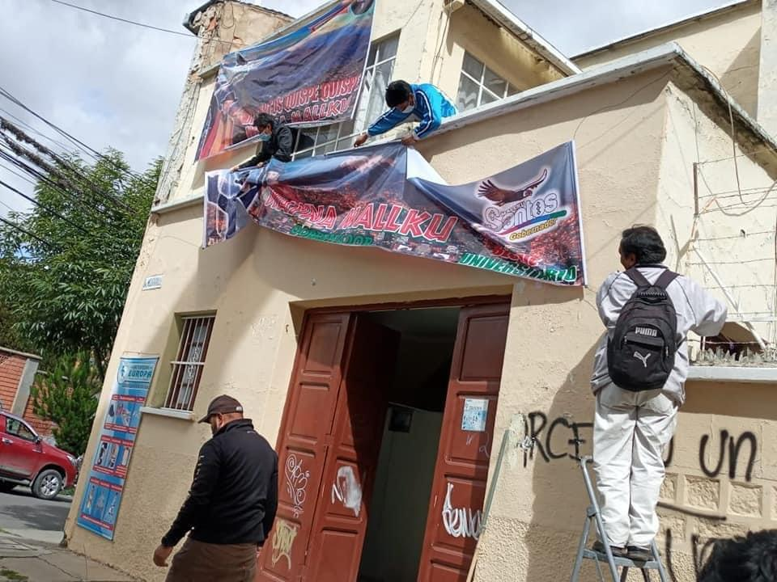

El Santos de Larrea

No es muy difícil entender por qué las casas de campañas abiertas por Larrea, están siendo entregadas a Santos Quispe. Seguramente, entre los acuerdos arribados, será mantener la sumisión del Servicio Departamental de Salud a los “batas blancas”, representantes del recalcitrante rechazo a la cultura originaria y sus saberes ancestrales, con la agrupación del otrora representante de la verdadera herencia de Tupak Katari, Felipe Quispe “El Mallku”, estirpe aparentemente olvidada por su progenie, debido al mezquino cálculo político de ganar por ganar la gobernación paceña.
A partir de la emisión del Decreto Supremo Nº 25233 de 17 de noviembre de 1998, los Servicios Departamentales de Salud (SEDES), se convierten en órganos desconcentrados de las Prefecturas de Departamento, hoy Gobernaciones. En el transcurso de los años, posteriormente a la creación de ítems por parte del Ministerio de Salud y Deportes, éstos fueron transferidos a los SEDES departamentales, correspondiéndole entonces a esta instancia, la administración de los recursos humanos del sector salud, es decir, para el presente caso, el SEDES La Paz es la institución competente de la dotación, evaluación, promoción, movimiento y remoción correspondiente del personal en salud, que trabaja en el departamento de La Paz.
Van un poco más de 45 días de huelga por parte de los médicos y personal de salud a nivel nacional, y la autoridad departamental no se pronuncia al respecto. No existe el correspondiente cumplimiento en la administración de sus recursos humanos, no se aplica el sistema de administración de personal que prevé la subsunción de estos actos a las contravenciones (abandono), que cometen diariamente los médicos. El incumplimiento de deberes, por parte del Director Técnico del SEDES La Paz, es evidente y la omisión de su Gobernador, lo convierte también en responsable directo.
Lo que no se dice nunca, tiene que ver con las razones que motivan a los directores técnicos de los SEDES departamentales, para no controlar y sancionar a los médicos. No es solidaridad y seguramente no tiene que ver con el desconocimiento de las normas. Tiene que ver con la toma del poder, por parte de los colegios médicos en la esfera administrativa, acción muy apartada de su naturaleza, no pueden ser juez y parte, no pueden decidir sobre qué profesional debe hacerse de un ítem y donde debe trabajar, el resultado de esto, es el abusivo manoseo de la salud.
Las filas en el “Complejo de Miraflores” por ejemplo, no tienen que ver en su totalidad con la falta de ítems, sino con la adecuada administración de los recursos humanos existentes. Y es que, si la autoridad departamental, delega su competencia al gremio, por su puesto que los horarios de trabajo, serán acomodados lo mejor posible, para que no les perjudiquen a los profesionales en salud en los horarios de sus clínicas y hospitales privados. ¿Hay atención de especialistas por la tarde en estos hospitales? ¿Por qué los especialistas solo atienen 2 días a la semana? Los gremios en salud, saben muy bien que ese “agosto” terminaría si el MAS gana la gobernación, pues a partir de ese momento, la autoridad en salud podrá después de muchos años, hacer prevalecer el bien común sobre el mercantilismo propio del colegiado médico. Larrea y compañía saben muy bien, que con el Instrumento no podrán pactar nada que perjudique a la población y avizoran un futuro donde tendrán que empezar a trabajar.

Es alarmantemente preocupante que Santos Quispe, haya pactado con la derecha que lo menosprecia, rememorando la práctica abigarrada en la historia de este país, respecto al trato de los pueblos indígenas, que parece no importar hoy en día para “Jallalla”. ¿Las pequeñas baratijas vuelven a poner de rodillas al indígena frente al poder del “blanco”?
Ariel Percy Molina Pimentel “El Molinario”
Abogado y Militante MAS – IPSP
Miembro Colectivo “La Vanguardia”